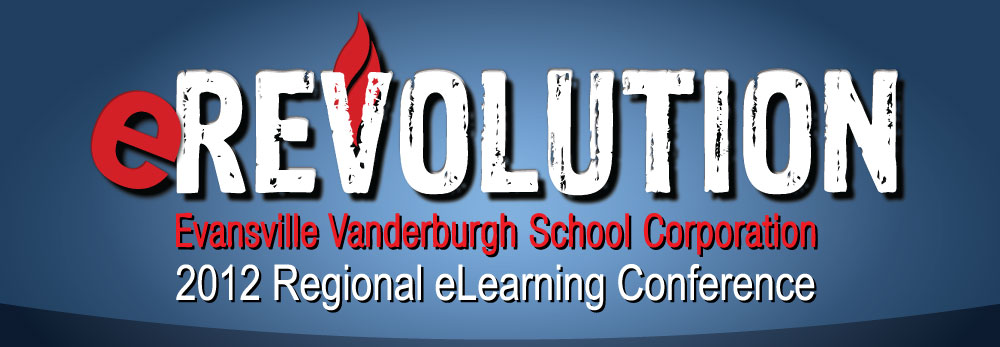
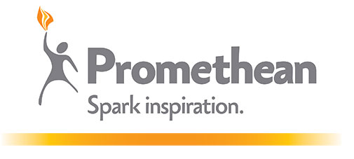

- CONFERENCE NEWS
Promethean and the EVSC invite all eRevolution attendees to experience the ActivClassroom by Promethean first-hand by joining us for a special interactive presentation inside the ActivClassroom in motion RV.
The RV will be present during the entire conference and admission is FREE to all registered eRev12 attendees.
A parent of two middle school aged children, Will Richardson has been thinking and writing about the intersection of social online learning networks and education for the past 10 years at Weblogg-ed.com and in numerous journals and magazines such as Ed Leadership, Education Week and English Journal, and most recently at willrichardson.com. He is an outspoken advocate for change in schools and classrooms in the context of the diverse new learning opportunities that the Web and other technologies now offer. He is a former public school educator for 22 years, and is a co-founder of Powerful Learning Practice (plpnetwork.com), a unique professional development program that has mentored over 5,000 teachers worldwide in the last five years.
His first book, Blogs, Wikis, Podcasts and Other Powerful Web Tools for Classrooms (Corwin Press, 3rd Edition 2010) has sold over 80,000 copies and has impacted classroom practice around the world. His second book, Personal Learning Networks: Using the Power of Connections to Transform Education, (Solution Tree) was released in May, 2011. His third book, a collection of blog posts titled Learning on the Blog, was published in August of 2011 by Corwin Press. Over the past six years, he has spoken to tens of thousands of educators in over a dozen countries about the merits of online learning networks for personal and professional growth. He is a national advisory board member of the George Lucas Education Foundation, and a regular columnist for District Administration Magazine. Will lives in rural New Jersey with his wife Wendy and his children Tess and Tucker.
Learning in a Networked World: For Ourselves and for Our Students
Wednesday, July 11 10:15am-11:30am
North HS Auditorium
If we have access and the skills to take advantage of it, the Web gives us an easy connection to the people and the resources that we need to learn whatever we want to learn, when we want to learn it. That fact challenges the fundamental beliefs that we’ve held about schools and teaching and learning for over 100 years. As our students graduate into a fast-changing, globally networked world, what assumptions do we need to reconsider about how to best prepare them for their futures? How can each one of us begin to change our own learning practice to better model these new opportunities for our students? And what new challenges do we have to overcome to make sure the idea of school remains relevant in the networked world in which our students will live?
(CS137) From Information Literacy to Information Leadership
Wednesday, July 11 @ 9:00am
Assessing the relevance and reliability of information is a crucial skill for all educators to master and model. But that type of information literacy is only the beginning. With the explosion of information coming online, each of us needs to use social Web technologies to employ successful strategies for finding, managing and communicating information relevant to our own practice and to our constituents. This workshop will cover the tools that information literate learners are using and the strategies to use them well.
(CS121) Connective Writing
Wednesday, July 11 @ 1:30pm
The ability to easily publish to the Internet has opened up all sorts of new possibilities for teachers to help students enhance their writing skills and become more effective communicators. In the age of the Read/Write Web, every reader can truly be a writer as well. Weblogs and wikis provide wide and diverse audiences from around the world for feedback and response. But they also require a more “connective writing” approach, one that can synthesize many disparate ideas from different sources, all connected together through hypertext. This is a think out of the box workshop intended to help you start exploring new ways to make your own writing and your classroom writing more meaningful and more effective.
Leslie Fishers interest in technology began while studying music at the University of Southern California. She quickly realized the value of utilizing computers for music mixing and recording. She grabbed her 300 baud modem, jumped on the Internet (before anyone really called it the internet) and started looking for music resources. She soon realized she was spending more time discovering technology than playing music so she changed her major and tried to figure out what geeky thing she could do for the rest of her life.
After graduating from USC with a Business and Marketing degree in 1989 and a quick stint as a Trainer, Leslie joined Apple Computer in 1992. When the Internet took off in 1994, Leslie was one of the first Apple employees assigned to study Internet growth and implementation.
In 1997, Leslie was roadkill on Apple's road to recovery and part of their massive lay off. Leslie planned to spend most of her huge severance package golfing and waiting a few months to look for a job. The day after her layoff, her phone began to ring with Apple customers requesting consulting, training and presentation services. Before she could say fore, Fisher Technologies Inc. was created to help educators with their technology implementations and decisions.
Fisher Technologies Inc. is now a worldwide company (meaning one employee named Leslie gets to travel the world teaching) specializing in Web Development, Web Tools as well as Digital Photography, Editing and Workflow.
(WS128) The Good, Bad and Ugly. Taking Digital Pictures Effectively
Wednesday, July 11 @ 7:45am
Leslie Fisher has been fortunate enough to learn her digital photography skills from some of the biggest and brightest in the industry. This presentation will go over examples and methods to take better digital pictures. Everything from composition, lighting, flash techniques and point and shoot camera settings will be discussed. Time permitting, Leslie will show you some of her favorite Photoshop tips to help you enhance your digital images.
(CS139) Gadgets!
Wednesday, July 11 @ 12:30pm
Are you a gadget head? Do you surf the net or listen closely to geeks talking in hopes of hearing about a cool software product or gizmo? Leslie Fisher (Gadget Freak) will show you some of her favorite hardware and software gadgets that do everything from make your life easier to provide piles of fun. Hardware, software and even completely off topic gadgets will be discussed.
(CS182) Web 2.0 and Social Networking
Wednesday, July 11 @ 2:45pm
You may have heard the term Web 2.0 tossed around and thought it was some sort of code. Actually, Web 2.0 is the buzzword that has been given to the new applications appearing on the web. The next generation of web surfers are having a more active roll in the development of today's web content and you can be part of it by contributing or learning the best locations to harvest this information. Wikis, Twitter, Blogs, Video, Podcasting, Social Collaboration sites and RSS will be demonstrated and discussed.
(CS129) The iPod Touch / iPhone Application Support Group (New Members Welcomed)
Thursday, July 12 @ 7:45am
Have an iPhone and an iPod and find keeping up to date with all of the new application releases daunting? This session will start with an overview of top accessories for your Apple Mobile device followed by demonstrations of Applications perfect for education as well as personal productivity. We will end the class with a birds of a feather session talking about our favorite Applications and discovering what additional Applications are out there. We will have an Elmo so your mobile device might be used to show the class whatever cool application you are using!
(CS183) Web 2.0 You Might Not Know About
Thursday, July 12 @ 12:30pm
Sure you know about blogs and you might have facebooked with the best of them but Web 2.0 brought the ability to have dynamic interactive web sites. This presentation will introduce you to some of the newest and coolest Web 2.0 sites. We will allow time at the end of the class so you can share any possible Web 2.0 sites we might have missed.
(CS177) Twitter Twitter Twitter Twitter!
Thursday, July 12 @ 2:45pm
An entire class about Twitter? You bet! Twitter newbie or seasoned veteran this class if for you! We will first overview Twitter and discover why it became such a sensation. You will then discover some of the best Twitter add-ons available that will help you tweet more effectively as well as discover people to follow. The class will conclude with some stories about people effectively using Twitter in the classroom and beyond.
Kevin grew up in poverty and attended school in many cities across the United States. As he witnessed education around the country he collected powerful experiences that still influence his conversations and his work with educators. He spent 13 years teaching art K-12 in public school and for 17 years spent summers leading creative adventure camps for kids of all ages. In 1991 he received the Making IT Happen Award which is an internationally recognized awards program for educators and leaders in the field of educational technology integration in K–12 schools. The program identifies and rewards educational technology leaders around the world for their commitment and innovation.
For the past four years he has hosted a creative learning site called ArtSnacks (http://artsnacks.org) where he shares 150+ ten minute drawing videos that support standards curriculum. This social “learning” network is his Petri-dish for learning to mentor teachers and students in virtual environments. He was selected to be in the Apple Distinguished Educator class of 2011 and spends time helping schools that use Apple’s powerful tools get the most out of them for students and teachers.
He is currently serving his ninth year as a Technology Integration Specialist at ESSDACK, an educational service center based in Hutchinson, Kansas. At ESSDACK he researches and designs programs, training and staff development with a strong passion for helping teachers and learners become successful with educational uses of technology. He shares his thinking and learning on his blog Tradigital Learning and in his podcast Driving Questions in Education. He is a school board member in the town of Inman Kansas and is currently serving in his second term. He feels that one of his most important roles is to help vision what the future holds for learners and to help move schools in right, new directions. During his classroom tenure, he developed project-based approaches to learning that infused technology and problem solving skills. He created a film program for kids and developed it into a fully functioning curriculum at the high school level. He co-developed a PBL approach called the Life Practice Model with colleague Ginger Lewman and they provide training and certification in this powerful, student driven approach to learning.
Kevin has developed online safety, anti-bullying and cyber-bullying curriculum which he shares with parents, teachers and students around the country. He certifies instructors in this curriculum and supports trainers as they go out and do this important work. His recent book Don’t Stay Under The Couch Starbuck and The Bully is the centerpiece of his Pre-K-6 curriculum. He continues to work with schools to develop innovative, engaging curriculum to better prepare learners for the world they will face when they graduate. He is passionate about meeting the needs of at-risk learners and works with kids in juvenile detention, developing approaches to re-engage the "lost" learner. Kevin travels the country and the world speaking at conferences and working with educators at the grassroots level and likes to promote a "tradigital" approach to education.
Kevin likes to bring his personal life experience and a sense of humor and creativity to the mission of helping prepare 21st century learners!
"Trends, Tools, and Tactics for 21st Century Learning"
Thursday, July 12, 2012 10:15am-11:30am
North HS Auditorium
This keynote is a fun look at the exciting things that happen when educators step outside their boxes and try new tools. It reinforces the importance of relationships while encouraging teachers to become learners again through positive examples of student success.
(CS168) Teaching "wired" learners
Thursday, July 12 @ 9:00am
In this session we explore some of the tools educators could/should use to engage kids who’ve grown up online and texting. We deal with issues around digital responsibility, mentoring and preparing kids for success in virtual space.
(CS112) Before They Click...
Thursday, July 12 @ 1:30pm
In this presentation I delve into the difference between firewalls and teaching kids positive behaviors with digital tools and in virtual places. I talk about cyber-bullying and offer suggestions for guiding kids away from behaviors that are damaging to victims as well as bullies. I share resources and sites that are helpful for mentors of “digital” kids. This is a balanced conversation that illuminates many positive digital tools that educators can use to bring out the best in kids.
July 11 - Morning Keynote
July 11 - Evening Keynote
July 12 - Morning Keynote
Brownstown - ICE
My Big Campus
Promethean
Promethean
TechSmith
Indiana Department of Education
My Big Campus
Achieve3000
Apex Learning
Rose-Hullman
CCC / New Dimensions Media
Apple, Inc.
Remind 101
My Big Campus
Apple, Inc.
ePals.com

Promethean
My Big Campus
Apple, Inc.
TechSmith
Indiana Department of Education
TechSmith
Apple, Inc.
Promethean
Karen Ault is currently a library media specialist at Brownstown Central Middle School. She has a BA in Elementary Education from Ball State University and two MS degrees from Indiana University, one in Elementary Education and another in Library Science. Along the way, Karen added certification for Spanish and language arts in grades 5-12. For the first 10 years of her career, Karen taught a variety of subjects in elementary, junior and high schools in Blackshear, Georgia. This is where she jumped on the technology bandwagon, picking up any experience she could as computers began to weave their way into education. After returning to the Brownstown Central School Corporation in Indiana, for the next 10 years she again taught an array of classes ranging from Spanish and journalism at the high school to almost every subject taught in sixth grade at the middle school. Due to strong support from her corporation, for the past 13 years Karen’s role as middle school librarian has allowed her to spend significant time in working collaboratively with teachers to integrate technology into the classroom.
When it comes to technology, Karen considers herself a jack of all trades, master of none. “I learn a little about whatever technology I can. Then, I use it when it enhances student learning. Working collaboratively with teachers, I am fortunate to actually see the success of technology in use.” Throughout her experiences, Karen has received certification as Intel Teach to the Future Master teacher, been awarded ILF Outstanding New Library Media Specialist, and earned Blue Ribbon recognition for her library program. Besides providing extensive technology related professional development for her colleagues, she has also presented at several state educational conferences including Indiana Computer Educators (ICE), Indiana Middle Level Education Association (IMLEA), and Association of Indiana School Library Education (AISLE/ILF).
(CS171) The Web in My World
Wednesday, July 11 @ 2:45pm
Thursday, July 12 @ 7:45am
The World Wide Web offers so many choices of free or inexpensive online tools and digital curriculum that it is often difficult to decide which ones to use. Google Apps (documents, spreadsheets, forms, presentations), Wordle, ISSUU, and Quia - see how one person uses these tools as timesavers in her roles as school librarian, collaborating classroom teacher, and professional development facilitator. As time permits, audience members will share their innovative ideas for unleashing the power of Web tools.

Melvin Bridges is in his first year of teaching. He received his degree in mathematics from Alabama State University. He moved to Indianapolis in 2010 to study in the Woodrow Wilson Indiana Teaching Fellowship at the University of Indianapolis, where he will receive a Master of Arts in Teaching (MAT) in 2012. Mr. Bridges is from Racine, Wisconsin, and he is a member of the New Life Worship Center and Alpha Phi Alpha Fraternity, Inc.
Scott Caulfield is a former teacher at Twin Creeks Middle School in Spring ISD, Texas. He was founder of the School Newspaper, Head Basketball Coach and Technology Integration Mentor. He was named 2005 Teacher of the Year Runner-Up and Intel Teach to the Future Master Teacher.
Currently, Scott is the East Team lead for the Teaching and Learning Consultant (TLC) Team for Promethean. Prior to being the TLC Team Lead, he was a TLC and TLC Manager for 5 years and was named Promethean TLC of the year in January 2010. Scott has been a featured presenter at The Ron Clark Academy Conference, Promethean US Summit, New York User Group, METC, TIES, MOREnet & ITEC.
If you are a Promethean Planet member, you may recognize Scott’s voice and quick wit as he develops and produces the Activtips Podcast on Promethean Planet. You can follow Scott on Twitter @EdTechScott.
Scott worked for the Houston Astros while in Texas, and was also a DJ and Sports Reporter for B97 while in college. He is a proud graduate of Indiana University, where he took the class “Coaching Basketball” taught by Bobby Knight. He is married to a High School English teacher and lives in Indianapolis. “When I met my wife in college, my GPA when up, while hers went down!”
(CS173) Top 10 Free Websites & Programs to use with your Interactive Board & LRS
Wednesday, July 11 @ 12:30pm
Thursday, July 12 @ 12:30pm
In this sessions you will learn how to use 10 free websites and programs that enhance your Interactive Whiteboard or Student Response Device. You will not only see these website and programs, but learn how to use them with your existing classroom technology to help engagement with your students and foster higher level thinking.
(CS175) Transform your Lessons for the 21st Century Learner
Wednesday, July 11 @ 1:30pm
Thursday, July 12 @ 1:30pm
Within the context of a digital lesson using an interactive whiteboard and voting system, come see how to transform your basic lessons into an extraordinary learning experience for today's 21st century learner. Using Promethean’s ActivInspire software along with the Activboard and ActivExpressions, participants will learn how to use all the features available to them so they can create a 21st century lesson that will be interactive and engage all learning styles.
(CS187) What's New in Interactive Content?
Wednesday, July 11 @ 2:45pm
Thursday, July 12 @ 2:45pm
Looking to spice up your interactive white board with exciting, engaging, ready-made content with Professional Development embedded? Interested in providing a daily opportunity to engage students in discussion using an interactive current news broadcast? Looking to prepare your students for their future while utilizing daily content aligned to standards? Do you need high quality, interactive supplemental or stand alone, digital math content aligned to the Common Core Standards for grades K-12? Look no further! Join us for a two pronged journey exploring Channel One News InterActiv and Houghton Mifflin Harcourt (HMH). This powerful combination of content and technology is designed to engage students, teachers, and parents! A journey with Promethean you won’t want to miss!
Lori Chaney , a 20 year veteran of the classroom, is a Promethean Teaching and Learning Consultant (TLC) for New York City and Jersey City. Prior to her career at Promethean, Lori was a teacher and a technology resource teacher (TRT). Living by the philosophy “Home is where the military takes you,” she found herself teaching a variety of subjects and grade levels in North Carolina, Indiana, California, Guam, Japan, and Virginia. While in Virginia, she was a recipient of the Washington Post – Agnes Meyer Award for Outstanding Teaching and a finalist for 2007’s Virginia Teacher of the Year.
Believing in Promethean’s philosophy of engaging students with authentic learning experiences and empowering teachers with innovative tools and methods, Ms. Chaney became a member of the Promethean team in September 2007. She has presented on 21st Century technologies at educational conferences and teachers’ workshops across the country. She is excited to be back in her home state of Indiana helping fellow Hoosiers understand the impact the ActivClassroom has on teaching and learning.
(CS153) Let's Focus - Ways to Focus Your Students Attention
Wednesday, July 11 @ 9:00am
Thursday, July 12 @ 9:00am
Learn how to use ActivInspire to engage your students with a variety of tools that focus their attention, including:
- Actions that "hide" and "reveal" items and text
- Captions that are revealed when you hover.
- Using the Fill Tool to color or reveal text
- Presetting the Spotlight and the Revealer
(CS174) Top 10 Tips and Tricks of ActivInspire
Wednesday, July 11 @ 12:30pm
Thursday, July 12 @ 12:30pm
Learn tips and tricks that make your Promethean experience a little easier. These often unknown simple tricks can make creating your own flipcharts easier.
(CS141) Get in Shape with ActivInspire
Wednesday, July 11 @ 2:45pm
Thursday, July 12 @ 2:45pm
Let the shapes tool shape up your flipchart! Learn a multitude of easy uses for this simple to use tool to enhance your own flipcharts and increase interactivity.
Sam Curcuruto is the Sales Representative for TechSmith’s Academic Solutions Team. On this team, he actively works with educators to demonstrate how TechSmith’s software can help increase student engagement, supplement digital learning, and make educator’s lives easier. He has a degree in Finance from Michigan State University and has been developing technology solutions for over 6 years now. Education touches every single person, in one way or another, through their entire lives and he’s very excited to be a part of that.
(CS195) TechSmith in Education - Stories of the Flipped Classroom, Flipped PD & Digital Content
Wednesday, July 11 @ 12:30pm
Thursday, July 12 @ 12:30pm
Participants will hear stories and learn how other teachers and districts are using TechSmith Software (Camtasia, Snagit, Coach's Eye, Screenchomp & Screencast) to create engaging student content and professional development materials. Conversations around flipped classroom and flipped professional development implementation, digital content creation and ways to use the educational technology you already have in conjunction with TechSmith products to enhance digital learning.
(WS134) The Many Faces of the Flipped Classroom
Wednesday, July 11 @ 1:30pm
Thursday, July 12 @ 1:30pm
While the Flipped Classroom buzz is going strong there are wrong ways and right ways to flip your classroom. Come ready to learn about flipping your classroom and discuss several different ways the Flipped Classroom can be used effectively in any subject area or grade level (as well as some of the no-no's). If you bring your computer you'll get a chance to create your own content screencasts.
Candice Dodson joined the Indiana Department of Education in November as the Director of eLearning where she is focusing on advancing and expanding Indiana’s efforts to take advantage of technology to improve student outcomes. She and her eLearning team are working to boost the state’s efforts to connect Indiana to great ideas in educational technology, virtual and online learning, and new learning models and instructional practices. The office of eLearning’s strategic plan includes the formation of a eLearning Leadership Cadre, statewide professional development opportunities including the regional conferences and admin boot camps, classroom innovation projects, and resources and training to support digital learning.
Candice comes to the IDOE from Evansville Vanderburgh Community Schools (EVSC) with over 20 years of experience in a variety of roles from elementary teacher, media specialist, and high ability educator to curriculum and technology integration specialist, central office administrator, and assistant principal. Ms. Dodson’s most recent work in Evansville centered on the implementation of EVSC’s 6-12 one-to-one initiative, the development of leadership programs for district administrators, and expansion of professional development programs.
Candice represents Indiana for SETDA (State Educational Technology Directors Association), is on the boards of HECC ( Hoosier Educational Computer Coordinators) and ICE (Indiana Computer Educators). She has presented various workshops and sessions on “Next Practice” teaching and learning in Indiana and nationally.
(CS144) Getting to "Yes!" Leading and Learning in the Digital Age
Wednesday, July 11 @ 12:30pm
Thursday, July 12 @ 9:00am
Today’s expectations are for schools to move beyond textbooks, to provide ubiquitous access to technology, and to afford educators and students with opportunities to teach and learn in collaborative, creative, and globally attuned environments. How will successful districts proceed in this fast moving, exciting, but many times uncertain, world of technology-infused learning? What are we giving up? What are the competing demands? What isn’t changing? What are the possibilities? Join me as we explore and discuss what it takes to lead during this digital revolution.
Amanda Eades is in her first year of teaching. She received her bachelor of arts degree from DePauw University in 2009, where she majored in biology and minored in history. Following her graduation, she spent a year as a naturalist at the Indiana Dunes Environmental Learning Center located in the Indiana Dune National Lakeshore. In 2010, Mrs. Eades returned to school to obtain her teaching license from the University of Indianapolis, and she will receive her master’s degree in 2012. Her interests include going to the movies with her husband, Alex, and spending time with her cockapoo, Jasper.
(CS161) Achieve3000 Overview
Wednesday, July 11 @ 1:30pm
Thursday, July 12 @ 9:00am
Achieve 3000 uses an online Lexile Assessment tool to determine each student's nonfiction reading comprehension level. Students receive level-appropriate nonfiction reading and writing assignments via email. All students in a classroom read the same content, but the passages and follow-up activities adjust for their unique learning profiles. Teachers are able to easily integrate over 15,000 articles into all content areas, truly promoting literacy across the curriculum. A powerful reporting package provides teachers and administrators with real-time diagnostic data on student performance in and out of school. These reports enable individualized intervention and remediation while encouraging teachers to make data-driven instructional decisions.

Douglas Fisher is a father, husband, educator, consultant, engineer, and entrepreneur. He has been a classroom teacher, worked as liaison to district administration, and was a staff technology consultant for Dayton Public Schools. Over the past eight years, Mr. Fisher has worked as an Education Consultant for digital content providers, most recently with Apex Learning Inc., in Seattle, Washington.
Douglas’s varied background includes maintaining avionics aboard Marine One, developing techniques for early detection of osteogenesis imperfecta in infants, being a restaurateur in American and Turkish cuisine, and as a financial advisor. His current focus is developing a lifelong passion for learning in his two children Truman and Penelope.
Douglas is, at heart, a teacher with an enthusiasm and passion for helping people explore brand new worlds of education and learning.
(CS108) Apex Learning Session #1
Wednesday, July 11 @ 9:00am
Thursday, July 12 @ 9:00am
(CS109) Apex Learning Session #2
Wednesday, July 11 @ 12:30pm
Thursday, July 12 @ 12:30pm
(CS110) Apex Learning Session #3
Wednesday, July 11 @ 2:45pm
Thursday, July 12 @ 2:45pm
Deb Gaff is the teacher liaison for the Rose-Hulman Institute of Technology PRISM project and an educator who is passionate about the implementation of technology in the K12 classroom. PRISM is a free website that provides collections of online resources for Indiana educators in the fields of science, technology, engineering, and mathematics (STEM). Deb has taught in elementary school, middle school science, high school biology and computer programming classrooms. She has implemented a variety of technology at all grade levels including student created animations demonstrating learning with Alice and Scratch in the middle school science classroom.
(CS166) Rose-Hulman PRISM Project
Wednesday, July 11 @ 9:00am
Thursday, July 12 @ 7:45am
PRISM is a free website that provides collections of online resources for Indiana educators in the fields of science, technology, engineering, and mathematics (STEM). The primary collection of digital teaching materials is indexed according to the Indiana Academic and Common Core Standards for K-12. Learn how to find resources and setup your classroom Moodle course. Your classroom Moodle courses are hosted by PRISM at no cost to your school.
(WS107) Creating an Interactive Moodle Course
Wednesday, July 11 @ 1:30pm
BYOD - Learn the basics of Moodle and how to use PRISM and Web 2.0 resources to create an interactive online Moodle course. PRISM is a free website that provides collections of online resources for Indiana educators in the fields of science, technology, engineering, and mathematics (STEM). The primary collection of digital teaching materials is indexed according to the Indiana Academic and Common Core State Standards for K-12.
Mary supports school districts, regionally, to integrate CCC! Streaming Media into their instructional practices. Mary has served as a classroom teacher, instructional technology coach, and assessment specialist, where she demonstrated successful instructional technology integration for the 21st century classroom. Mary received her B.A. in Anthropology from the University of Notre Dame and her Indiana Certification for Secondary Education from St. Mary's College, Notre Dame, Indiana. Mary is proud to be part of New Dimension Media, Inc., a dynamic company that understands the importance of supporting teachers in designing relevant learning experiences for their students with high quality digital media and 21st century technologies.
(CS127) Digital Media for Elementary Grades
Wednesday, July 11 @ 7:45am
Participants will explore the wealth of digital media available in the CCC! Streaming Media digital library that will enhance the learning experience for elementary students.
(CS129) Digital Media Integration
Wednesday, July 11 @ 12:30pm
Thursday, July 12 @ 12:30pm
Participants will explore the CCC! Streaming Media digital library and learn effective integration strategies. This session is specifically designed for all NEW teachers to EVSC.
(WS132) Digital Learning Day
Wednesday, July 11 @ 1:30pm
In this hands-on, interactive workshop, participants will explore new ways to integrate digital media into classroom instruction. Combining informational text and pictures, participants will add digital media to promote visual literacy and enhance learning experiences for students. Participants are encouraged to BYOD.
(CS128) Digital Media for Math (K-12)
Thursday, July 12 @ 7:45am
Participants will explore the wealth of digital media available in the CCC! Streaming Media digital library that will enhance the learning experience for math instruction. This session is for ALL grade levels.
(WS133) Digital Resources for the Flipped Classroom
Thursday, July 12 @ 1:30pm
Participants will explore the wealth of digital media available in the CCC! Streaming Media digital library that will enhance the learning experience for math instruction. This session is for ALL grade levels.
Scott Kline, Apple Systems Engineer, joined Apple in 2007. Originally from Nebraska, Scott started his professional career with the Lincoln Public Schools system and has a passion for technology in education ever since. He is a graduate of Nebraska Wesleyan University where he earned B.A. degrees in both Information Systems and German.
(WS130) Apple Workshop: Under the Hood. A Session for Education IT.
Wednesday, July 11 @ 1:30pm
Thursday, July 12 @ 1:30pm
Explore ways to configure, manage, and support iOS devices in an education environment. Learn about purchasing and owning content. And explore deployment models for your students and faculty.
Brett Kopf is the cofounder of remind101. He graduated from Michigan State University and has built remind101 to over 200,000 teachers, students and parents in 7 months. The company sends 400,000 messages/week and has been profiled on NBC, NPR and Techcrunch.
(CS117) Breaking Down the Walls of Your Classroom
Wednesday, July 11 @ 9:00am
Thursday, July 12 @ 9:00am
Learn how to safely use mobile devices and social media outside the classroom.
Libby Lawrie recently retired after 34 years of teaching. She has a strong commitment to education, physical fitness and health. Mrs. Lawrie received her undergraduate degree from Indiana University and master’s degree in education from Butler University. She has spent 21 years teaching biology, science, health and physical education in the classroom and 13 years teaching in the virtual environment. Mrs. Lawrie is Achieve Virtual Education Academy’s virtual education specialist and physical education teacher. She is also an adjunct instructor for the IUPUI School of Education, a national presenter, a My Big Campus Trainer and a virtual education evangelist. She is a member of iNACOL, ISTE, Future of Education, Global Education and Skype Educators. She has received an IPL Golden Apple Award and was honored as Creative Biology Teacher of the Year.
Mrs. Lawrie is a life-long learner and has a strong comment to see each student succeed. She is a mother of three amazing adults. Her daughter Nikki (Miami of Ohio) is a biology/chemistry teacher, Kevin (Purdue University) is a graphic designer and Nate (Yale University), played six years in the NFL and currently is playing for the San Francisco 49ers. She has been blessed with a son-in-law Brian, who is a school principal, and two daughters-in-law Amanda, a teacher, and Smaranda, who is in the Asian-Pacific Leadership Program. She has four grandchildren (and one on the way), and loves to take them swimming. Her grandchildren are always at her house playing the Wii, xBox, iPad and iPhone. Her husband, Chris, just retired from 35 years in education and still coaches football.
Joanna Montgomery has spent the last 12 years at Apple Inc., working with schools as they strive to meet the needs of their teachers and students in today’s education environment. She works to help schools see the value of transforming the learning environment to engage today’s students and prepare them for their future. Prior to her years at Apple, Joanna was a secondary English language arts teacher, then worked at an intermediate education agency helping schools in six counties integrate technology into the curriculum.
(WS115) Apple Workshop: Engage Student. Explore Apps, Interactive Books, and Multi-Touch Textbooks.
Wednesday, July 11 @ 7:45am-9:45am
Thursday, July 12 @ 7:45am-9:45am
Discover amazing interactive iBooks. Immerse yourself in the world's largest online catalog of free education content in iTunes U. And experience some of the thousands of education apps for iPad. Learn how to create your own interactive Multi-Touch books with Mac and iBooks Author. Discover how a course is built with iTunes U Course Manager using interactive learning materials. Then see how it all comes together with an overview of ownership and deployment models for content.
(CS191) Apple Session: Using and Creating Courses in iTunes U
Wednesday, July 11 @ 12:30-1:15pm
Thursday, July 12 @ 12:30-1:15pm
A session focused on introducing educators and IT leaders to the capabilities of Apple technology in education. In this session, explore the new iTunes U app, and learn how to create and distribute courses on iTunes U.
Dr. Rita Oates directed ed tech in Miami-Dade County Schools, the fourth largest school district in the U.S., for more than seven years. She was education editor of the first U.S. online service with color and graphics, VIEWTRON, which launched in Miami Beach. She was chair of the ed tech graduate program at Barry University and earlier taught at the University of Alabama.
In 2006, Rita was part of a team that worked with the Ministry of Education in the UAE to create an ed tech plan for the public K12 schools of the country. She had earlier worked on ed tech evaluations and plans for several large school districts in Florida and Georgia and evaluated federal grants for teacher training in ed tech at Stetson, Long Island University and Barry University.
At ePals, as vice president of education markets since 2007, she works with state and national education leaders and large districts to successfully implement ePals LearningSpace, a virtual workspace, and free web 2.0 tools such as ePals SchoolMail, Classroom Match, and projects in schools here and and abroad.
In 2010 FSTE gave her the Lifetime Ed Tech Leadership award, and she became a member of the CoSN Volunteer Hall of Fame. She has been a George Lucas Educational Foundation Faculty Associate.
She began her career as a high school language arts teacher and student publications adviser in Kansas, after earning degrees in curriculum and instruction and in journalism at the University of Kansas. She earned a master’s degree and PhD at Indiana University. She has written 12 books and more than 100 articles about ed tech, curriculum, school reform and parental involvement. She served two terms as PTSA president at her children’s high school. She has spoken at nearly 1,000 PTA meetings in Florida, Virginia and Kansas about kids and technology.
(WS127) Weaving Web 2.0 into Learning with Global Communication
Wednesday, July 11 @ 7:45am
This workshop session will inspire and encourage teachers and others to engage their students in global collaborative projects through free, school-safe and protected websites and communications tools. Examples of
collaborations, projects, interactions, cultural objects and digital storytelling among students from countries around the world will demonstrate how instructionally beneficial and engaging it is to add global collaboration to the classroom.
Teachers will also see the steps of starting a simple project, finding partner classrooms, using translation tools, and more. Students take an active role in learning and asking better questions.
If internet and BYO are available, during the session the participants will be getting an ePals profile, searching among projects and ideally strategizing ways to "globalize" learning across many different subject areas and ages.
By participating in global collaborative projects using technology tools, students explore many social and cultural issues. By learning about, and with students from all over the world, students develop empathy, caring, compassion and a deeper understanding of youth from elsewhere and in a variety of living and educational situations.
(They can also have authentic communication, data collection/analysis, co-creation of content, and much more.)
(CS162) Parenting 2.0: How to Help Parents Embrace Digital Learning Tools
Wednesday, July 11 @ 1:30pm
Thursday, July 12 @ 1:30pm
Did your mama talk to you about sexting, cyberbullying and watching what you post on online? Parents today have new challenges and issues, created by digital technology at school and home. Learn how you can help parents understand the real issues, fears and challenges and support them in being great parents in a 2.0 world. Resources for schools and families will be shared. The core presentation is based on sessions at school PTA meetings, Wired Safety and Wired Moms.
As a result of this session, participants will be able to share information in PTA meetings, with parents.
(CS140) General Social Network Tools vs. Collaborative Web 2.0 Education Platforms
Wednesday, July 11 @ 2:45pm
Thursday, July 12 @ 2:45pm
Significant differences exist between general mass market web 2.0 tools and web 2.0 collaboration platforms designed for K12 use. See examples and case studies in this important visionary talk. Student safety, curricular focus and policy management aren't available in Facebook or other general market tools; ePals and other K12 market companies have developed robust social learning tools. Teachers want social learning tools; CIOs seek scalability, reliability, security and safety. How can students best be served in the quest for social learning tools?
Amanda Palermo has recently joined Promethean as a Teaching and Learning Consultant and will help the growing team in the New York CityPublic Schools. Prior to working at Promethean, Amanda worked as an elementary school teacher in several different grades in NY schools. Most recently, she taught second grade at Success Academy Harlem 1 Charter School in NYC. Amanda has a B.S. in Elementary Education from Boston University and is currently working towards a M.A. in Special Education from Hunter College. She has always been extremely passionate about education, specifically in New York City, and her desire to positively impact as many children as possible has lead her to this position as a TLC with Promethean.
(WS126) I've Got an ActivBoard Now What?
Wednesday, July 11 @ 7:45am
Thursday, July 12 @ 7:45am
BYOD - Are you new to the Promethean family of ActivEducators? Did you recently get an ActivBoard and are looking to start integrating it into your classroom? Join Promethean Teaching and Learning Consultant, Amanda Palermo, in this two hour workshop and get your feet wet with these easy to integrate tips tricks and ideas that will jump start you on your way to an engaged, interactive, ActivClassroom! **Be sure to bring a laptop with the latest version of ActivInspire so that you can practice what you are learning.
(CS187) What's New in Interactive Content?
Wednesday, July 11 @ 2:45pm
Thursday, July 12 @ 2:45pm
Looking to spice up your interactive white board with exciting, engaging, ready-made content with Professional Development embedded? Interested in providing a daily opportunity to engage students in discussion using an interactive current news broadcast? Looking to prepare your students for their future while utilizing daily content aligned to standards? Do you need high quality, interactive supplemental or stand alone, digital math content aligned to the Common Core Standards for grades K-12? Look no further! Join us for a two pronged journey exploring Channel One News InterActiv and Houghton Mifflin Harcourt (HMH). This powerful combination of content and technology is designed to engage students, teachers, and parents! A journey with Promethean you won’t want to miss!
Rachel Porter is the Digital Curriculum Integration Specialist for Southwest Parke Schools in Montezuma, IN. She holds an Elementary Education degree from Taylor University and received her masters degree from Indiana Wesleyan University. Rachel taught junior high science for fifteen years and is currently leading her corporation through a 1:1 initiative and a move beyond textbook curriculum. She is a trained My Big Campus coach and enjoys presenting to other educators.
Rachel is committed to God, her husband (Ben), and their their two young children (Anna and Ethan). She enjoys ministry, children, crafts, cooking, homemaking, and just about any form of technology.
Barry, originally from St. Louis, MO, currently resides in Olathe, KS. Barry is a former elementary school teacher and computer resource specialist. He is a graduate of the University of Kansas College of Education, and has an MAT degree in Computer Studies from Webster University. His passion, and his role at Apple, is inspiring and supporting schools as they transform teaching and learning for the 21st century.
(WS115) Apple Workshop: Engage Student. Explore Apps, Interactive Books, and Multi-Touch Textbooks.
Wednesday, July 11 @ 7:45am-9:45am
Thursday, July 12 @ 7:45am-9:45am
Discover amazing interactive iBooks. Immerse yourself in the world's largest online catalog of free education content in iTunes U. And experience some of the thousands of education apps for iPad. Learn how to create your own interactive Multi-Touch books with Mac and iBooks Author. Discover how a course is built with iTunes U Course Manager using interactive learning materials. Then see how it all comes together with an overview of ownership and deployment models for content.
(CS191) Apple Session: Using and Creating Courses in iTunes U
Wednesday, July 11 @ 12:30-1:15pm
Thursday, July 12 @ 12:30-1:15pm
A session focused on introducing educators and IT leaders to the capabilities of Apple technology in education. In this session, explore the new iTunes U app, and learn how to create and distribute courses on iTunes U.
Dan Spencer lives in Grass Lake, MI and is currently the Educational Technology Consultant for the Jackson County Intermediate School District. Before that he taught junior high physical science for three years in American Fork JH (Utah) and chemistry, physics and engineering in Michigan Center HS (Michigan). For the past six years he has experimented with different models of layered curriculum, differentiated instruction, and mastery learning. Hand-held devices such as the iPod Touch have been very influential in allowing him to flip his classes and let kids learn at their own pace.
(WS134) The Many Faces of the Flipped Classroom
Wednesday, July 11 @ 1:30pm
Thursday, July 12 @ 1:30pm
While the Flipped Classroom buzz is going strong there are wrong ways and right ways to flip your classroom. Come ready to learn about flipping your classroom and discuss several different ways the Flipped Classroom can be used effectively in any subject area or grade level (as well as some of the no-no's). If you bring your computer you'll get a chance to create your own content screencasts.
Yancy is a creative teacher that is passionate about the field of education. Traveling to hundreds of schools he has been able to have conversations about what works in terms of learning, curriculum, and incorporating technology. He is constantly working to connect the best educators to help cross-pollinate innovative learning practices. He fancies himself to be Kitchen Nightmares' Gordon Ramsay for schools, minus the profanity, yelling, and good hair.
(WS110) By the eBook
Wednesday, July 11 @ 7:45am
Thursday, July 12 @ 7:45am
The advent of tablets is chaining the medium from which we read. The Kindle, Nook, and iPad have propelled the purchase of ebooks to be more numerous than print copies. Not only are ebooks growing in popularity, they also are growing into what they are. Join this workshop as we:
- Learn how to organize annotation and marginalia
- Discuss transmedia storytelling
- Discuss balancing social reading with personal and pensive reading
- Learn how to engage students in reading with book forums, social annotations, and finding their passions.
(CS122) Consume, Curate, Create, and Collaborate in a Dynamic Curriculum
Wednesday, July 11 @ 12:30pm
Thursday, July 12 @ 12:30pm
Educational curation is moving from textbooks to accessing information for learning . Teachers need not create a warehouse of resources for their students, but more of a museum. Curriculum is a conversation that teachers engage in with students sharing insight and connectedness. Good curators simplify the overwhelming complexity of content and connect it to their students.
As schools shift away from textbooks as their primary source of content, now is a great time for teachers to resume more responsibilities for the design of their curriculum. Using a framework of consuming, collaborating, creating, and curating, various learning centered tools will be demonstrated and explored.
Jason Valade is the Customer Solutions Engineer for TechSmith’s Academic Solutions Team. Until May, Jason was a Technology Teacher at the elementary level, interacting with approximately 900 third, fourth, and fifth grade students each week. In his role with TechSmith, he will be responsible for helping to craft individualized solutions for schools and districts looking to implement TechSmith products. You can connect with Jason on Twitter at @Jay2thaVee.
(CS194) Using Coach's Eye and ScreenChomp to Change the Classroom
Wednesday, July 11 @ 9:00am
Thursday, July 12 @ 7:45am
Looking at new ways to engage students, participants will be introduced to Coach's Eye (iPad/iPhone/iPod Touch and Android) and ScreenChomp (iPad). Discover ways that instant video feedback (Coach's Eye) can enhance and increase student understanding. Differentiate their learning on the spot! Engage your students (ScreenChomp) as this recordable whiteboard is just the canvas you need to jot your ideas down and share them – with the world, or just a friend or two. Developed with teachers and students in mind, ScreenChomp records your touchscreen interactions and audio so you can allow the students to share their learning! The possibilities are endless!
(WS134) The Many Faces of the Flipped Classroom
Wednesday, July 11 @ 1:30pm
Thursday, July 12 @ 1:30pm
While the Flipped Classroom buzz is going strong there are wrong ways and right ways to flip your classroom. Come ready to learn about flipping your classroom and discuss several different ways the Flipped Classroom can be used effectively in any subject area or grade level (as well as some of the no-no's). If you bring your computer you'll get a chance to create your own content screencasts.
Marie Vickers, Account Executive K-12 Education, originally joined Apple in 1993 with the Apple Enterprise Team for the Central Region. She has been a part of the Apple Education team since January 2005 supporting Chicago Public Schools. She currently covers Illinois and Indiana K-12 school districts. Her passion is helping educators transform the learning experience, making it more interactive, immersive and engaging for their students.
(WS115) Apple Workshop: Engage Student. Explore Apps, Interactive Books, and Multi-Touch Textbooks.
Wednesday, July 11 @ 7:45am-9:45am
Thursday, July 12 @ 7:45am-9:45am
Discover amazing interactive iBooks. Immerse yourself in the world's largest online catalog of free education content in iTunes U. And experience some of the thousands of education apps for iPad. Learn how to create your own interactive Multi-Touch books with Mac and iBooks Author. Discover how a course is built with iTunes U Course Manager using interactive learning materials. Then see how it all comes together with an overview of ownership and deployment models for content.
(CS191) Apple Session: Using and Creating Courses in iTunes U
Wednesday, July 11 @ 12:30-1:15pm
Thursday, July 12 @ 12:30-1:15pm
A session focused on introducing educators and IT leaders to the capabilities of Apple technology in education. In this session, explore the new iTunes U app, and learn how to create and distribute courses on iTunes U.
(WS130) Apple Workshop: Under the Hood. A Session for Education IT.
Wednesday, July 11 @ 1:30pm
Thursday, July 12 @ 1:30pm
Explore ways to configure, manage, and support iOS devices in an education environment. Learn about purchasing and owning content. And explore deployment models for your students and faculty.
Wendy Zuber is a Teaching and Learning Consultant at Promethean, a global leader and innovator in interactive learning technology. Prior to her career at Promethean, Wendy was a secondary science teacher and technology integration coach. In this role, she helped provide teachers with professional development opportunities to support the creation of technology-rich curricula and the integration of 21st century tools.
During Ms. Zuber’s teaching career, she developed innovative projects to help middle school and high school students learn essential scientific skills and concepts. In 2006, she was recognized as one of the top 100 technology-integrating educators as a Pennsylvania Keystone.
She has presented at numerous technology conferences and workshops across the country focusing on effective technology integration that supports the unique needs of students centered on effective digital lesson design and transformational teaching and learning.(CS136) From Good to Great
Wednesday, July 11 @ 7:45am
Thursday, July 12 @ 7:45am
Are you looking to increase the interactive and engagement factor of your Promethean ActivInspire lessons? Join us and discover tips and tricks that take your flipcharts from Good to Great. Looking for ways to create engaging interactive lessons that get kids involved with the lesson? This interactive session will help you spice up your lessons taking them from good to great!
(CS156) Making the Most of Q & A with Student Response Devices
Wednesday, July 11 @ 1:30pm
Thursday, July 12 @ 1:30pm
How do you know what they don't know? Discover questioning strategies that will get students discussing and exploring common misconceptions within content. Educators will gain insight into utilizing student response devices to engage students in formative assessment with discourse. This session will cover an overview of Promethean ActivExpressions, Activotes and ActivEngage devices.
(CS104) 4 IWB Strategies to Get Kids Thinking
Wednesday, July 11 @ 2:45pm
Thursday, July 12 @ 2:45pm
Educators will explore strategies that will surely get students thinking! Leveraging the power of Promethean’s technology and best practices to engage kids and challenge them to think deeper and more meaningfully about content. Bring your thinking hats! We will surely get you thinking too!
Registration for the 2012 EVSC eRevolution Conference is FREE and includes breakfast and lunch each day.
If need to cancel your registration, please email the EVSC ICATS.
Go to the eRevolution Website for more information.
By registering and participating in the EVSC eRevolution Regional eLearning Conference you are releasing the use of your likeness. This includes, but is not limited to, audio/video recordings and photographs that are taken during the conference.
After the conference has concluded, attendees will receive via email a digital certificate stating they attended the conference.

Adobe is changing the world through digital experiences. We help our customers create, deliver, and optimize content and applications.
Alpha Laser Imaging provides office equipment, supplies, service and print management solutions to small & medium size businesses in the Indiana, Illinois & Kentucky areas.
Online Digital Curriculum

IT Products & Services for Education
Evansville Vanderburgh School Corporation
Official Limousine Service of the eRevolution
Indiana Department of Education
MyBigCampus, Web Filtering, Collaboration, Management, Security, Email Solutions for Schools
Evansville Public Education Foundation
Interactive Whiteboards and Student Response Systems
South Western Communications
Makers of Snagit, Camtasia, Jing and more.
Adobe is changing the world through digital experiences. They help customers create, deliver, and optimize content and applications.
Education Territory Manager
Email: dtutton@adobe.com
Phone: 317.883.7187
Website: http://www.adobe.com
Alpha Laser Imaging provides office equipment, supplies, service and print management solutions to small & medium size businesses in the Indiana, Illinois & Kentucky areas.
Vice President
Email: jalthaus@alpha-laser.net
Phone: 812.475.1644
Website: http://www.alpha-laser.net
We fund meaningful projects and programs for students, engage the community in support of public education, and reward student-centered innovation in public schools.
Executive Director
Email: awalker@pefevansville.org
Phone: 812.422.1699
Website: http://www.pefevansville.org
Promethean creates, develops, supplies and supports interactive solutions that span all ages and market sectors from traditional education to business and government.
Teaching and Learning Consultant
Email: wendy.zuber@prometheanworld.com
Phone: 412.908.2744
Website: http://www.prometheanworld.com
Facebook: PrometheanPlanet
Twitter: @wzuber @prometheanusa
SWC offers turnkey integrated communication technology solutions to education in a variety of industries through classroom presentation, school communication and audio/video systems.
Sales Engineer
Email: dskinner@swc.net
Phone: 812.477.6495
Website: http://www.swc.net
People everywhere use TechSmith software to grab images and record content straight off their computer screens to create dynamic presentations and screencasts.
Trade Show and Event Marketing Manager
Email: j.sutka@techsmith.com
Phone: 517.381.2300 X561
Website: http://www.techsmith.com
15325 Highway 41 North
Evansville, IN 47725